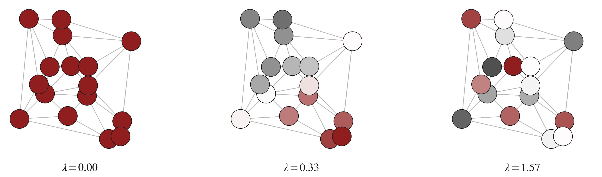
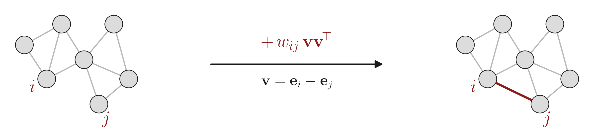
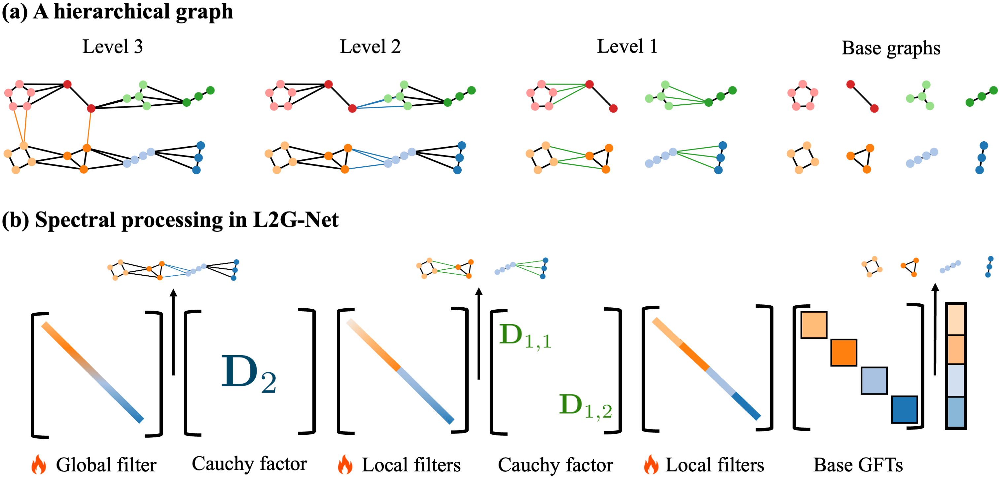
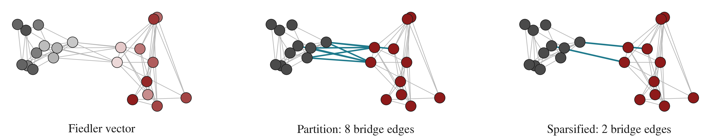
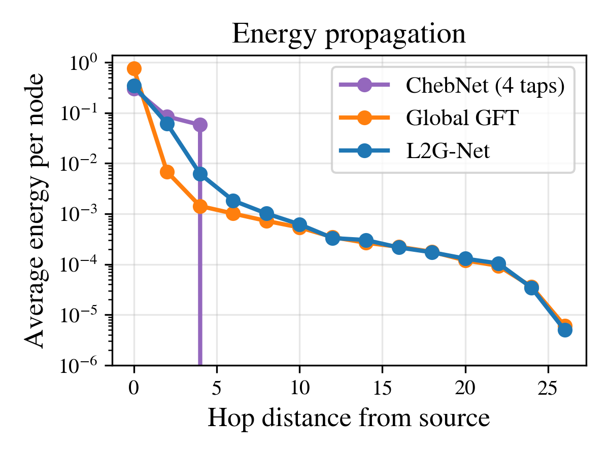
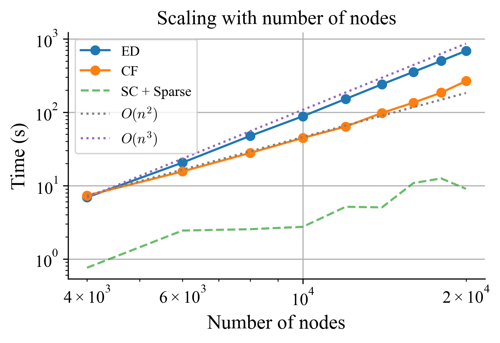
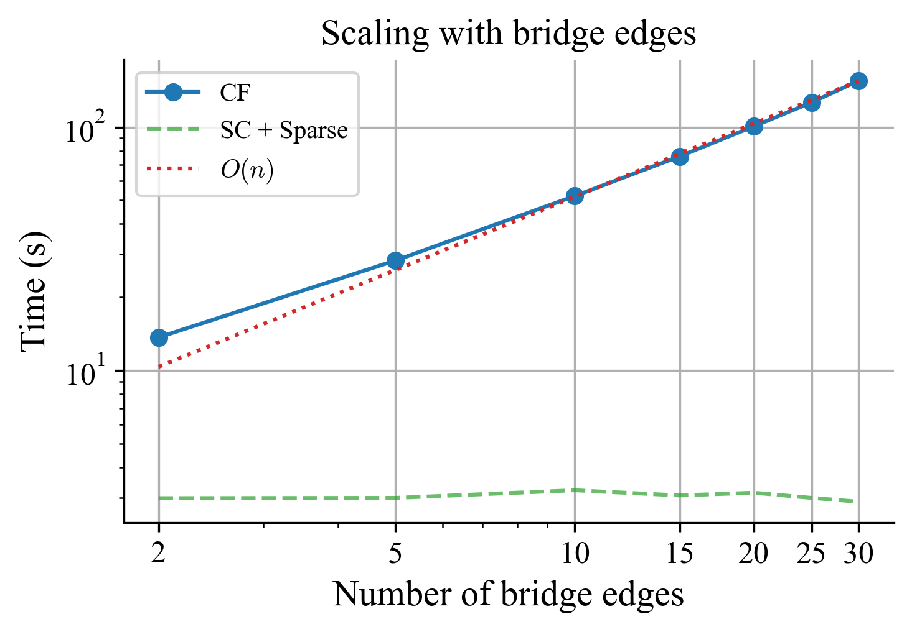

Abstract
Despite their theoretical advantages, spectral methods based on the graph Fourier transform (GFT) are seldom used in graph neural networks due to the cost of computing the eigenbasis and the lack of vertex-domain locality in the resulting representations. As a result, most GNNs rely on local approximations such as polynomial Laplacian filters or message passing, which limit their ability to model long-range dependencies.
We introduce an exact factorization of the GFT into operators acting on subgraphs, combined via a sequence of Cauchy matrices. Building on this factorization, we propose L2G-Net (Local to Global Net): a new class of spectral GNNs that avoids full eigendecompositions with $O(kn^2)$ complexity. Experiments on large graphs show that L2G-Net scales to regimes out of reach for the standard GFT, and is competitive with state-of-the-art methods with orders of magnitude fewer learnable parameters.
Background
The Graph Fourier Transform
The GFT basis is given by the eigenvectors of the graph Laplacian. Each eigenvector corresponds to a graph frequency: low-frequency eigenvectors vary slowly across the graph, while high-frequency ones oscillate rapidly across edges.

GFT-based GNNs are theoretically appealing but rarely used in practice since 1) computing the eigenbasis costs $O(n^3)$, and 2) GFT operations are fully global, i.e., modifying any spectral coefficient affects all nodes simultaneously.
Rank-one updates and Cauchy matrices
Adding an edge $(i, j)$ with weight $w_{ij}$ to a graph with Laplacian $\mathbf{L}$ yields a rank-one update:
$$\tilde{\mathbf{L}} = \mathbf{L} + w_{ij}\,\mathbf{v}\mathbf{v}^\top, \qquad \mathbf{v} = \mathbf{e}_i - \mathbf{e}_j.$$

A rank-one update rotates the eigenbasis by an orthogonal Cauchy-like matrix (OCLM). If $\mathbf{L} = \mathbf{U}\,\mathrm{diag}(\boldsymbol{\lambda})\,\mathbf{U}^\top$ and $\tilde{\mathbf{L}} = \tilde{\mathbf{U}}\,\mathrm{diag}(\tilde{\boldsymbol{\lambda}})\,\tilde{\mathbf{U}}^\top$, then:
$$\tilde{\mathbf{U}}^\top = \mathbf{C}(\tilde{\boldsymbol{\lambda}},\,\boldsymbol{\lambda})\,\mathbf{U}^\top$$
Here $\mathbf{C}$ has entries $C_{ij} = a_jz_i / (\tilde{\lambda}_j - \lambda_i)$ and the updated eigenvalues interlace the old ones: $\lambda_1 \le \tilde{\lambda}_1 \le \lambda_2 \le \cdots \le \lambda_n \le \tilde{\lambda}_n$.
Method
GFT via divide and conquer
Rather than adding all edges at once, we build the GFT hierarchically. Starting from independent subgraphs, we progressively merge them by adding one bridge edge at a time. Each step is a rank-one update handled by a Cauchy factor.
- Partition the graph into subgraphs using balanced cuts (spectral bisection via the Fiedler vector).
- Compute the GFT of each base subgraph independently.
- Merge subgraph GFTs progressively using one Cauchy factor per bridge edge. Merging is fast because each Cauchy factor is localized to the two subgraphs it connects.

Finding a suitable hierarchy
The factorization cost is $O(kn^2)$, where $k$ is the number of bridge edges between subgraphs. For this to beat dense eigendecomposition, we need balanced partitions with small cuts. We accept a partition only when it provably reduces cost:
$$n^2 k + \max_i f(\mathcal{G}_i) < f(\mathcal{G})$$
where $f(\mathcal{G})$ is the eigendecomposition cost of the full graph. When no balanced partition satisfies this, we apply cut sparsification (Spielman–Srivastava) to reduce $k$ while preserving the Laplacian quadratic form up to $(1\pm\varepsilon)$.

Cauchy factorization theorem
For any graph $G \in \mathcal{F}(L, \{G_i\}_{i=1}^m, k)$ with Laplacian $\mathbf{L} = \mathbf{U}\,\mathrm{diag}(\boldsymbol{\lambda})\,\mathbf{U}^\top$, and $\mathbf{U}_0$ the block-diagonal matrix of subgraph eigenvectors:
$$\mathbf{U}^\top = \mathbf{D}(\boldsymbol{\lambda}, \tilde{\boldsymbol{\lambda}}_{K-1}) \cdots \mathbf{D}(\tilde{\boldsymbol{\lambda}}_1, \tilde{\boldsymbol{\lambda}}_0)\, \mathbf{U}_0^\top$$
Each Cauchy factor $\mathbf{D}$ is localized to the two subgraphs it connects, and the full chain computes the exact global GFT. This is computable in $O(kn^2 + \sum_i f_i(n))$ time, i.e., quadratic in $n$, linear in $k$.
L2G-Net architecture
L2G-Net inserts learnable spectral filters at every level of the Cauchy factorization. Local filters (one per subgraph at each level) capture within-subgraph spectral patterns; a global filter at the top level models long-range interactions. The architecture is graph-adaptive and fixed before training begins.

L2G-Net occupies a unique position in the design space:
Results
Runtime on synthetic graphs


Citation
If you find this work useful, please cite:
@inproceedings{fernandezmenduina2026l2gnet,
title = {L2G-Net: Local to Global Spectral Graph Neural Networks
via Cauchy Factorizations},
author = {Fern{\'a}ndez-Mendui\~{n}a, Samuel and
Pavez, Eduardo and
Ortega, Antonio},
booktitle = {Proceedings of the 43rd International Conference
on Machine Learning},
year = {2026},
series = {Proceedings of Machine Learning Research},
publisher = {PMLR}
}